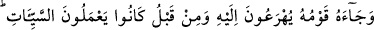
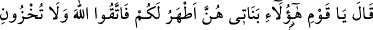
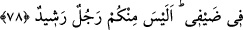

Sonra Lût (a.s.) karısına: “Yazıklar olsun sana! Kalk ekmek yap ve burada
bulunanlardan sakın kimseye bahsetme!” dedi. Karısı ise bir kâfir ve münâfıktı. Hemen
bir ihtiyacını gidermek bahanesiyle dışarı çıktı ve önüne gelen herkese misafirlerden
bahsetti. Şöyle diyordu: “Lût’un evinde öyle erkekler var ki onlar kadar güzel yüzlü,
güzel elbiseli, hoş kokulu adam görmedim.” Kasabadakiler bunu öğrenince hemen Lût
(a.s.)’ın kapısına dayandılar. İşte şu âyet bundan bahsediyor:
78. Lût’un kavmi, koşarak onun yanına geldiler. Daha önce de kötü işler
yapmaktaydılar. (Lût:) “Ey kavmim! İşte kızlarım, sizin için onlar daha temizdir.
Allah’tan korkun ve misafirlerimin önünde beni rezil etmeyin! İçinizde aklı başında
bir adam yok mu?!” dedi.
“Lût’un kavmi, koşarak” bu misafirlerin aslî hüviyetlerinden gâfil ve sonlarının
nereye varacağını bilmez bir şekilde kötü arzularını onlarla gidermek için “onun
yanına” yani evinde misafirleri ile birlikte bulunan Lût’a “geldiler.”
“Daha önce de kötü işler yapmaktaydılar.” Lût kavmi, koşa koşa geldiler. Bundan
yani Lût (a.s.)’a gelmezden önce de kötü işler yapmaya dalmış vaziyette idiler. Onların
kötü fiilleri, livâta, güvercin oynatmak, meclislerde ıslık çalmak ve insanlarla alay
etmek için yolların başlarında oturmak idi. Livâta etmeye o kadar alışmışlardı ki bu fiil
onlar nazarında hiçbir çirkinlik taşımıyordu. Zaten bu yüzden hiç utanmadan alenî bir
şekilde koşa koşa gelmişlerdi.
et-Te’vîlâtü’n-Necmiyye’de şöyle denilir: “Lût kavmi, helak olup azaba
uğratılmalarını gerektiren kötü ameller yapıyorlardı. İşte azabı karşılamak üzere koşa
koşa geldiler ve nefislerinin habisliği sebebiyle nezih insanların yaşadığı peygamberlik
evinden bu nezih insanları büyük sıkıntıya sokacak bir şey istediler. Böylece de
şakîliğin en üst mertebesine ve azâbın hemen gelmesine müstahak oldular.”
Anlatılanlar, fısk u fücûru aşikare yapmanın gizlice yapmaktan daha büyük bir günah
olduğuna işaret ediyor. Fıskını, açıkça yapan fâsıkların şahidliği işte bu sebeple
reddedilir. Bir hadiste şöyle buyrulmuştur: “Aşikâre günah işleyenler hariç ümmetimin
tamamı affedilecektir.”[156] Yani mâsiyetleri ulu orta işleyenler affedilmez, bilakis
işledikleri hadlerle ilgili bir mâsiyet ise dünyada yakalanıp cezası verilir. Âhirette ise
hadlerle ilgili olsun-olmasın azaba duçar edilirler.
Sa‘dî şöyle der: